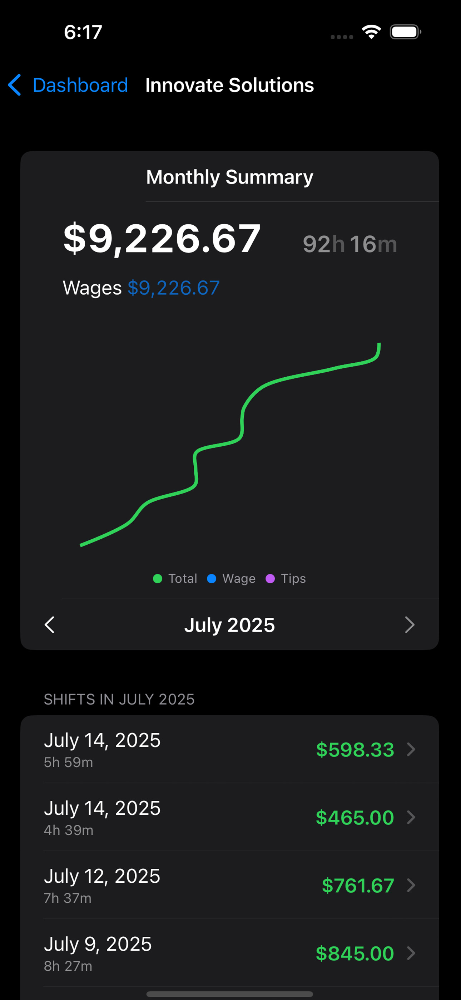
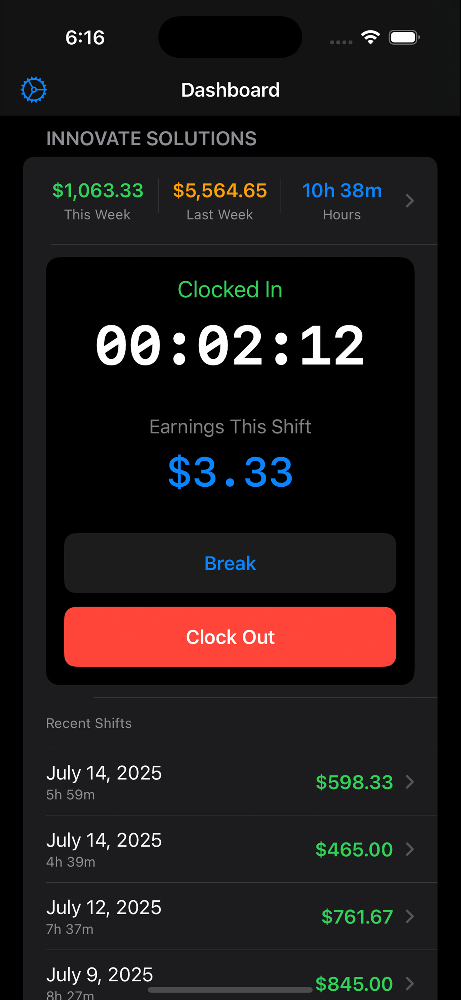
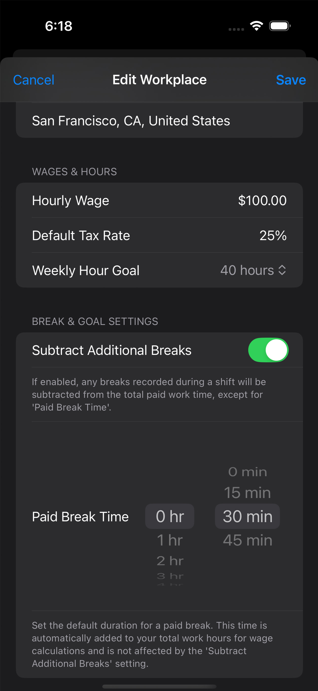
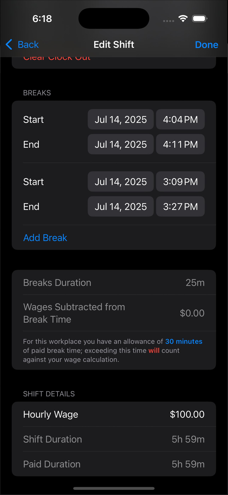
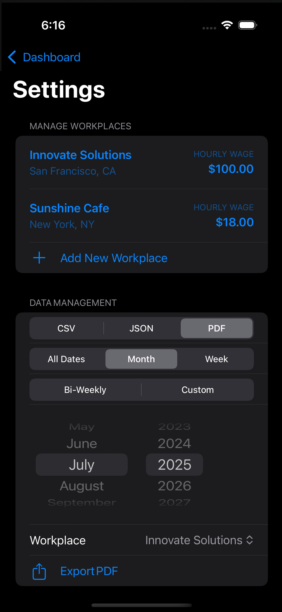

Stay on top of your time and money with Clock Out — the fast, flexible time tracker built for anyone working by the hour.
Key Features:
- One-Tap Clock In/Out: Start and stop shifts instantly from the Home screen with a redesigned interface.
- Track Multiple Workplaces: Add unlimited jobs — each with its own hourly wage, location, notes, and custom settings.
- Break Tracking (New in 1.1): Manually start and end breaks during shifts. Break time is clearly shown in summaries and subtracted from total hours.
- Instant Earnings Summary: Instantly compare This Week vs Last Week for total hours and earnings.
- Monthly Earnings Chart (New in 1.1): Visualize wage-only, tips, and total earnings over time with interactive scrolling and large data labels.
- Full Shift History: Browse every shift you’ve logged — complete with dates, durations, and dollars earned.
- Flexible Data Export (Updated in 1.1): Export to PDF, JSON, or CSV with custom date ranges: All Time, Month, Week, or Custom.
- Streamlined Dashboard & Settings (Improved in 1.1): Cleaner layouts, better field labels, and updated button sizing for smoother navigation.
- Sample Data & Debug Tools: Quickly populate shifts for testing or onboarding. Admin debug panel now available in debug mode.
- Privacy-First Design: No accounts. No ads. No tracking. All data stays securely on your device.
Whether you're managing side gigs, hourly shifts, or a full-time role — Clock Out makes it easy to track your time, understand your earnings, and stay in control. Download Clock Out and clock in on your goals.




